1. Tổng quan
Vĩnh Khánh Smart Tourism giúp du khách mua gói truy cập, vào app bằng token, khám phá gian hàng trên bản đồ/danh sách, xem món ăn, nghe audio mô tả theo ngôn ngữ và tự động phát audio khi đến gần địa điểm.
Mobile App
MAUI app cho du khách: access token, QR, gói dịch vụ, bản đồ, tìm kiếm, audio, ngôn ngữ, offline cache.
Backend API
ASP.NET Core API xử lý auth, access session, gian hàng, món ăn, admin/owner, TTS và MySQL.
Dashboard
CS_admin PHP dashboard cho admin và chủ quản lý quản lý tài khoản, gian hàng, món ăn, gói dịch vụ.
Căn cứ từ git
| Commit | Nội dung PRD sử dụng |
|---|---|
2677a5f | Fix app bugs, access pages, image/audio/lang. |
cfaa5d1 | Fix logic QR token và cập nhật activity/sequence access. |
791cbad | Gói dịch vụ, QR mua gói, bypass thanh toán. |
8577f4e | Admin/backend features, request gian hang, service packages. |
c9908b4 | Đăng ký web cho chủ quản lý. |
b1987ae | Ngôn ngữ app, audio, geofence. |
fdd005f | SQLite/offline cache. |
2dca51f | Bản đồ. |
2. Phạm vi hiện tại
Trong MVP
- Kiểm tra token khi mở app.
- Đăng ký gói dịch vụ và tạo token theo gói.
- Một QR token đăng nhập gửi qua email.
- Token chỉ dùng trên một thiết bị.
- Bản đồ/danh sách/tìm kiếm/chi tiết gian hàng và món ăn.
- Audio guide, geofence 10m, polling 3 giây.
- SQLite cache TTL 12 giờ.
- Admin/owner dashboard.
Ngoài MVP
- Webhook thanh toán thật.
- QR khôi phục riêng.
- Token dùng chung nhiều máy.
- Analytics nâng cao.
- Production release store.
3. Chức năng
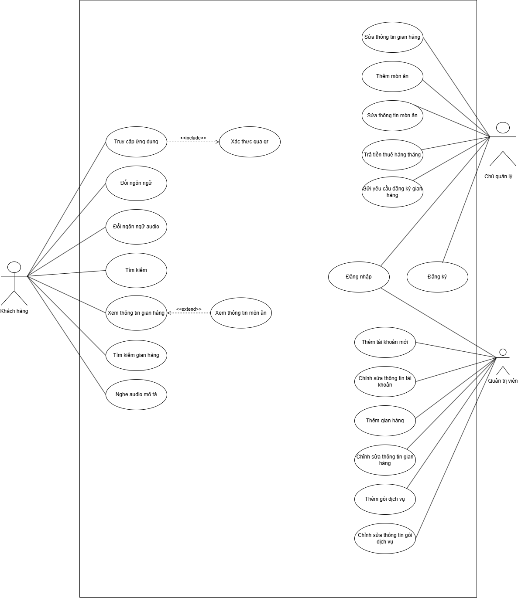
Access & Package
Mở app, validate token, đăng ký gói, nhận QR token email, quét lại QR token trên đúng máy.
ImplementedExplore
Xem bản đồ, danh sách, tìm kiếm, chi tiết gian hàng, chi tiết món ăn.
ImplementedLanguage & Audio
Đổi ngôn ngữ app/audio, nghe audio mô tả, auto-play khi vào vùng geofence.
ImplementedOffline Cache
Memory cache + SQLite cache, fallback khi API/mạng không sẵn sàng.
ImplementedOwner Dashboard
Đăng ký, gửi yêu cầu gian hàng, quản lý gian hàng/món ăn, upload ảnh.
ImplementedAdmin Dashboard
Quản lý tài khoản, gian hàng, món ăn, yêu cầu, gói dịch vụ.
Implemented3.1 Luồng QR token
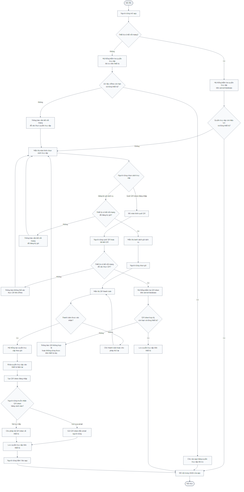
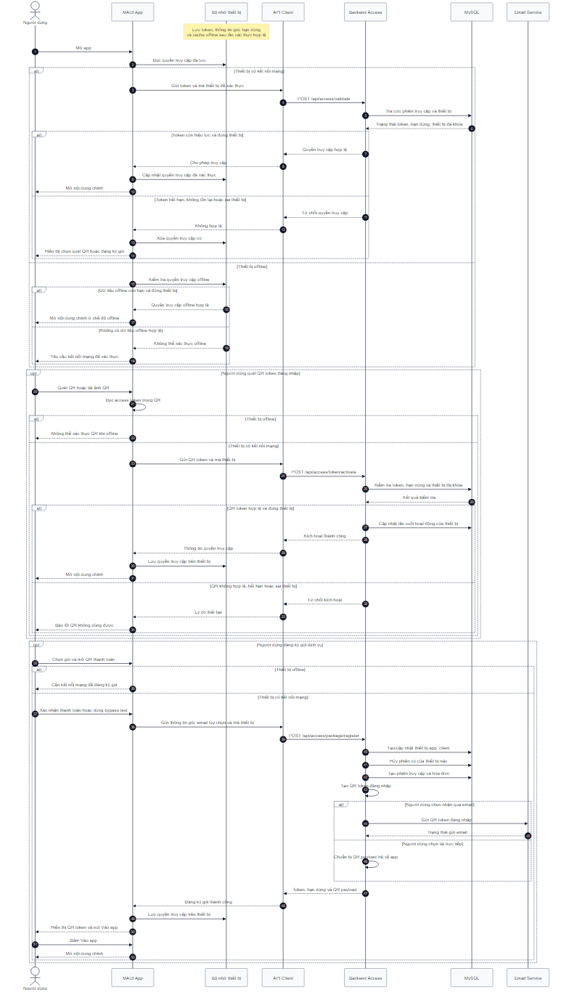
| Quy tắc | Mô tả |
|---|---|
| Một QR | Chỉ có QR token đăng nhập, không có QR khôi phục riêng. |
| Một máy | Token được khóa vào clientDeviceId khi tạo gói. |
| Quét lại | Nếu mất token local, quét lại QR trong email trên đúng máy để vào app. |
| Sai máy | Máy khác hoặc máy reset làm đổi ID sẽ bị từ chối. |
3.2 Xem thông tin gian hàng
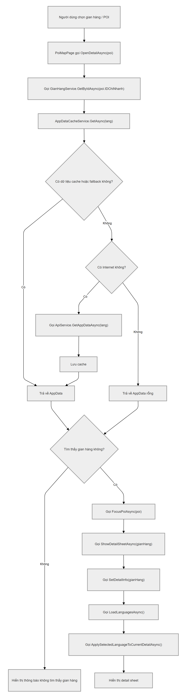
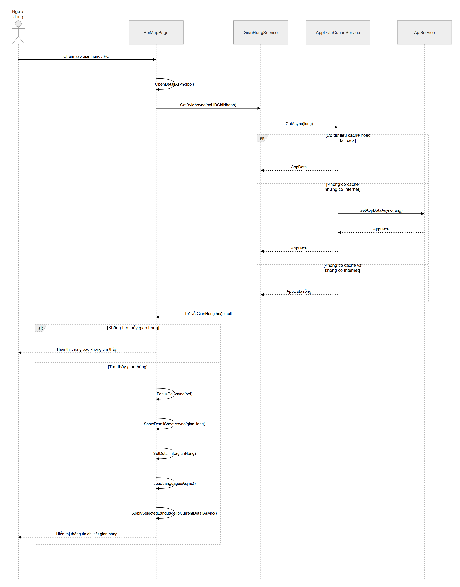
| Quy tắc | Mô tả |
|---|---|
| Ưu tiên cache | GianHangService đọc dữ liệu từ AppDataCacheService.GetAsync(lang) trước để mở chi tiết nhanh và hỗ trợ trường hợp offline. |
| Fallback API | Khi không có cache hoặc fallback nhưng có Internet, app gọi ApiService.GetAppDataAsync(lang) rồi lưu lại cache mới. |
| Không có dữ liệu | Nếu không có cache và không có Internet, service trả về AppData rỗng và luồng xử lý tiếp như không tìm thấy gian hàng. |
| Theo ID POI | Chi tiết gian hàng được tìm bằng poi.IDChiNhanh; nếu không khớp thì hiển thị thông báo không tìm thấy. |
| Hiển thị chi tiết | Khi tìm thấy gian hàng, app focus POI, mở detail sheet, nạp danh sách ngôn ngữ và áp dụng ngôn ngữ đang chọn. |
3.3 Hiển thị gian hàng/địa điểm gần vị trí người dùng
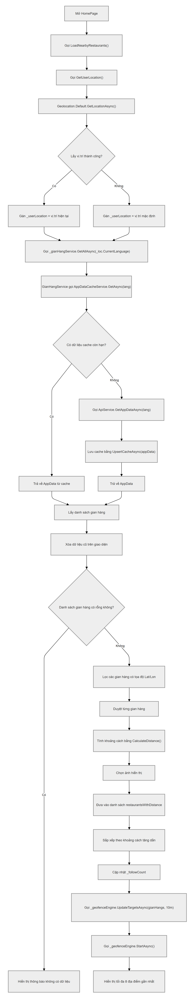
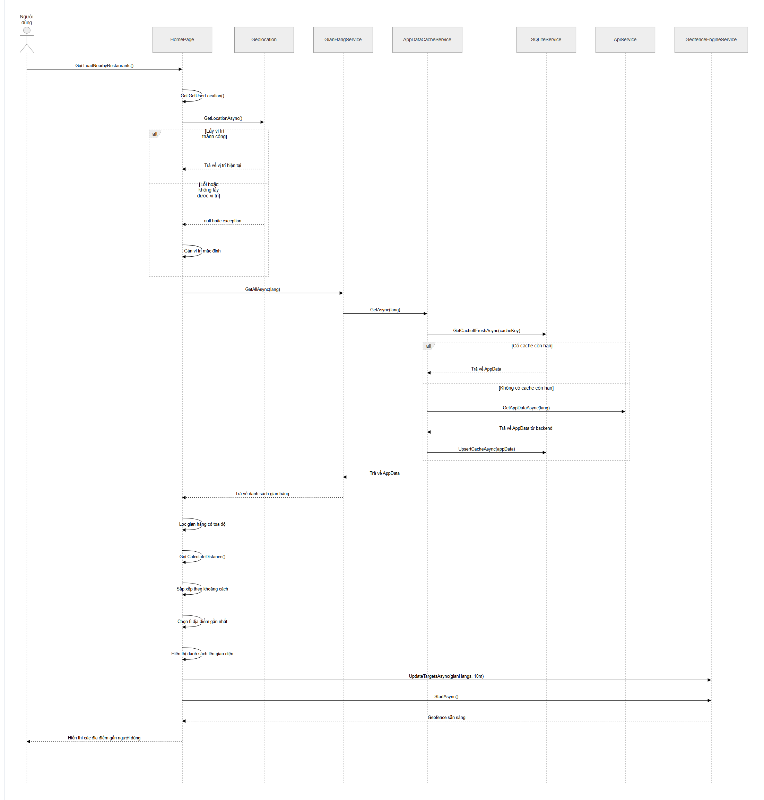
| Quy tắc | Mô tả |
|---|---|
| Lấy vị trí | App gọi GetUserLocation(); nếu không lấy được thì dùng vị trí mặc định để vẫn có danh sách gợi ý. |
| Lọc theo khoảng cách | Chỉ các gian hàng/địa điểm có tọa độ mới được tính khoảng cách bằng CalculateDistance(). |
| Ưu tiên gần nhất | Sau khi sắp xếp tăng dần theo khoảng cách, app chỉ hiển thị tối đa 8 địa điểm gần nhất. |
| Cache rồi API | Dữ liệu gần vị trí người dùng ưu tiên cache; thiếu cache thì gọi API, thiếu cả hai thì hiển thị trạng thái trống. |
| Kích hoạt geofence | Sau khi có danh sách phù hợp, app cập nhật target và khởi động geofence để theo dõi vùng gần người dùng. |
3.4 Nghe audio thuyết minh
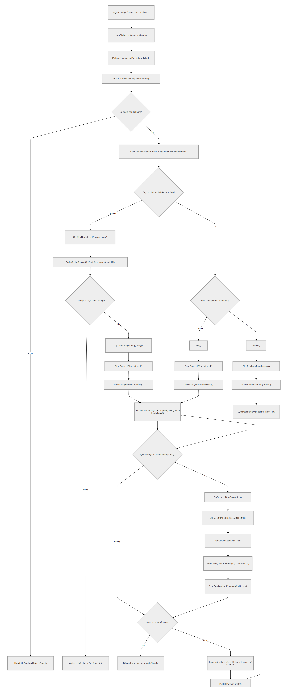
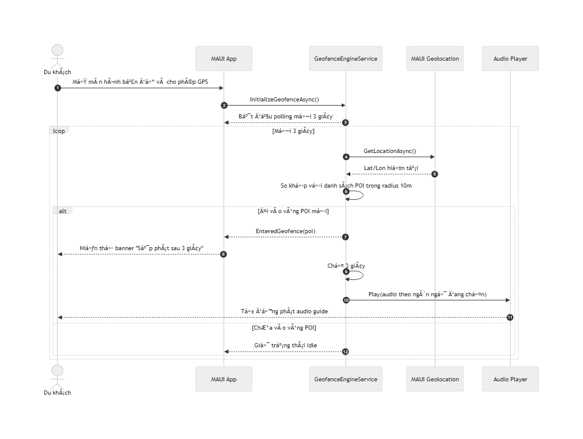
| Quy tắc | Mô tả |
|---|---|
| Chọn POI | Người dùng mở chi tiết một gian hàng/địa điểm để lấy nguồn audio thuyết minh tương ứng. |
| Kiểm tra audio | App ưu tiên audio cache; nếu chưa có thì gọi API để lấy file hoặc URL phát. |
| Phát tự động | Khi audio sẵn sàng, app phát thuyết minh theo trạng thái hiện tại của POI. |
| Offline fallback | Nếu không có mạng thì chỉ phát được khi audio đã cache trước đó. |
| Điều khiển phát | Người dùng có thể tạm dừng, tiếp tục hoặc đổi sang POI khác để phát audio mới. |
3.5 Tìm kiếm gian hàng thông minh
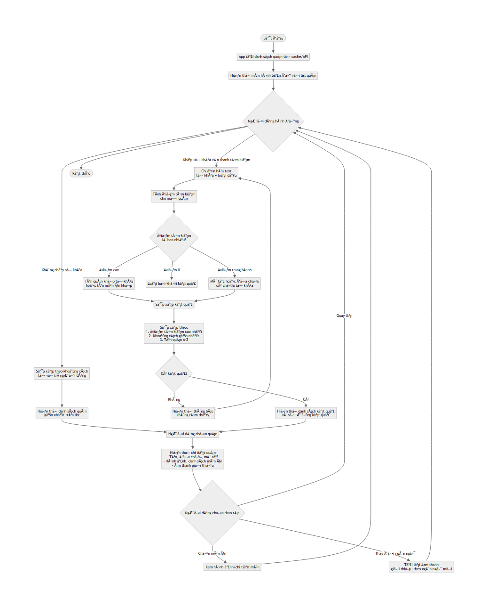
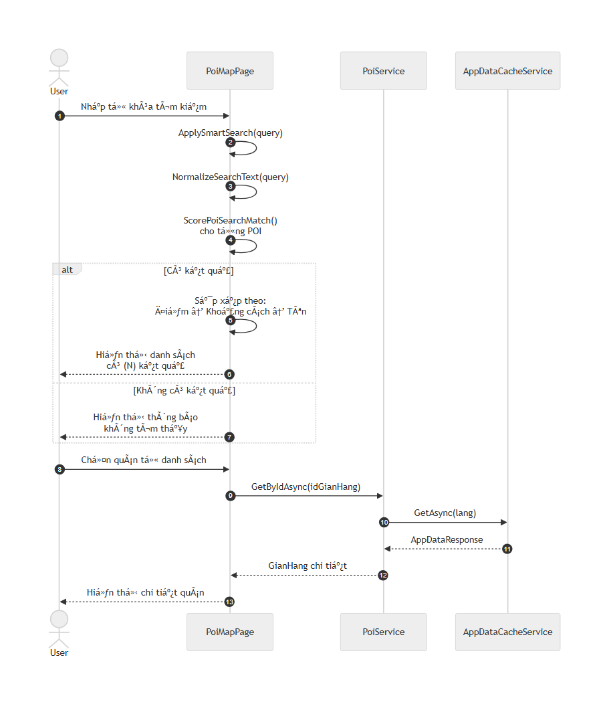
| Quy tắc | Mô tả |
|---|---|
| Chuẩn hóa từ khóa | Từ khóa được trim, đưa về chữ thường và bỏ dấu trước khi so khớp để tăng độ chính xác. |
| Tính điểm theo vị trí khớp | Mỗi gian hàng được cộng điểm theo nơi xuất hiện từ khóa: tên quán, tên món, mô tả, địa chỉ. |
| Ưu tiên điểm cao | Kết quả được sắp xếp giảm dần theo điểm số; điểm bằng nhau thì ưu tiên gian hàng gần vị trí người dùng hơn. |
| Không có kết quả | Nếu không gian hàng nào đạt điểm tối thiểu, hiển thị trạng thái rỗng và gợi ý đổi từ khóa. |
| Hiệu năng | Giới hạn số kết quả hiển thị ban đầu để tránh lag UI, hỗ trợ tải thêm khi cần. |
| Vị trí khớp | Điểm số |
|---|---|
| Tên quán bắt đầu bằng từ khóa | 220 |
| Tên quán chứa từ khóa | 170 |
| Tên món ăn bắt đầu bằng từ khóa | 180 |
| Tên món ăn chứa từ khóa | 140 |
| Mô tả chứa từ khóa | 70 |
| Địa chỉ chứa từ khóa | 55 |
3.6 Đổi ngôn ngữ
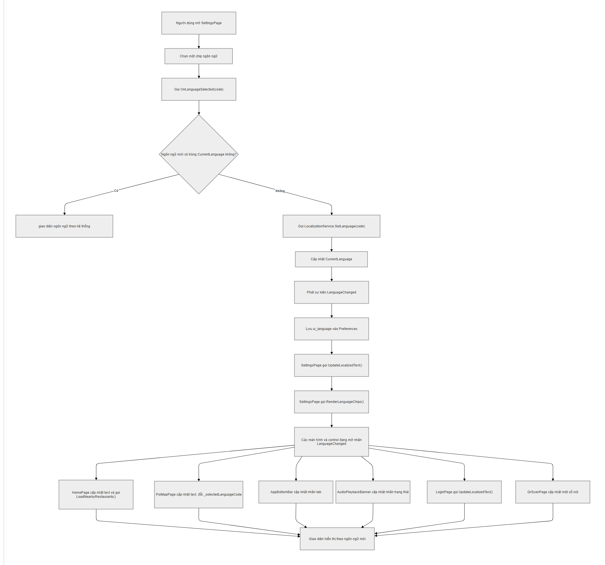
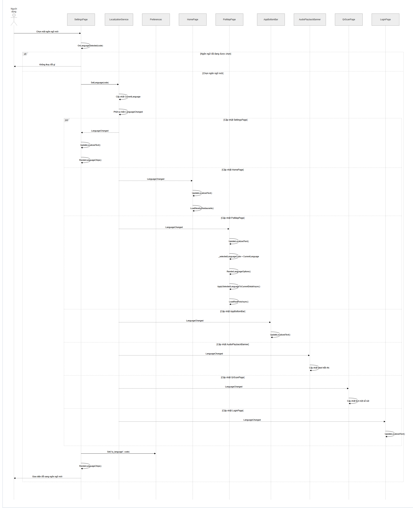
| Quy tắc | Mô tả |
|---|---|
| Đổi ngôn ngữ toàn cục | Khi người dùng chọn ngôn ngữ mới, app cập nhật ngôn ngữ hiện hành và áp dụng cho toàn bộ màn hình liên quan. |
| Ưu tiên dữ liệu đã có | Ứng dụng ưu tiên dữ liệu cache theo ngôn ngữ vừa chọn để phản hồi nhanh trước khi gọi API. |
| Fallback API theo ngôn ngữ | Nếu thiếu dữ liệu cache, app gọi API với tham số ngôn ngữ mới và đồng bộ lại cache cục bộ. |
| Giữ ngữ cảnh người dùng | Sau khi đổi ngôn ngữ, vẫn giữ POI/gian hàng đang xem, chỉ cập nhật nội dung hiển thị theo ngôn ngữ mới. |
| Đồng bộ nội dung audio | Nếu có audio thuyết minh theo ngôn ngữ mới, app tải lại metadata hoặc nguồn phát tương ứng. |
3.7 Phát audio khi đến gần
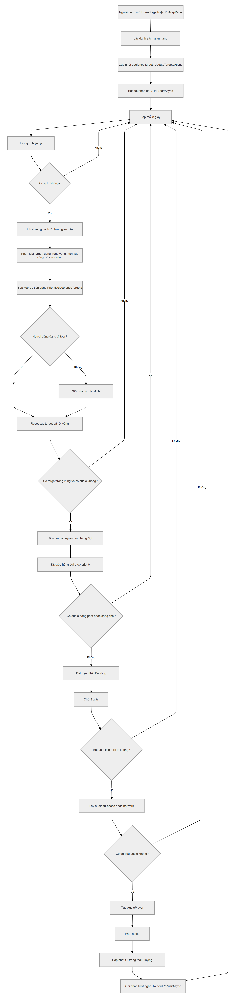
| Quy tắc | Mô tả |
|---|---|
| Kích hoạt theo geofence | Audio chỉ tự phát khi người dùng đi vào vùng gần của POI/gian hàng đã được geofence engine theo dõi. |
| Ưu tiên quyền chủ động | Nếu người dùng đang phát audio thủ công hoặc vừa tạm dừng, không tự động ghi đè ngay để tránh gián đoạn trải nghiệm. |
| Không phát lặp liên tục | Áp dụng cooldown theo POI để tránh tự phát lại nhiều lần khi người dùng dao động quanh ranh giới vùng gần. |
| Fallback dữ liệu audio | Ưu tiên audio cache tại máy; nếu chưa có thì gọi API lấy nguồn phát phù hợp với ngôn ngữ hiện tại. |
| Dừng khi rời vùng | Khi người dùng ra khỏi vùng theo dõi hoặc chuyển sang POI khác, app cập nhật trạng thái phát theo chính sách dừng/chuyển track. |
3.8 Thanh toán online và giá trị trả về
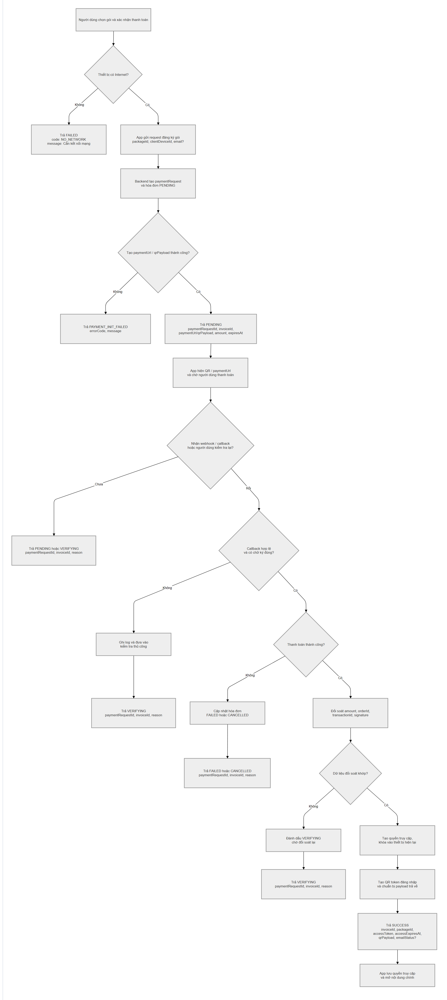
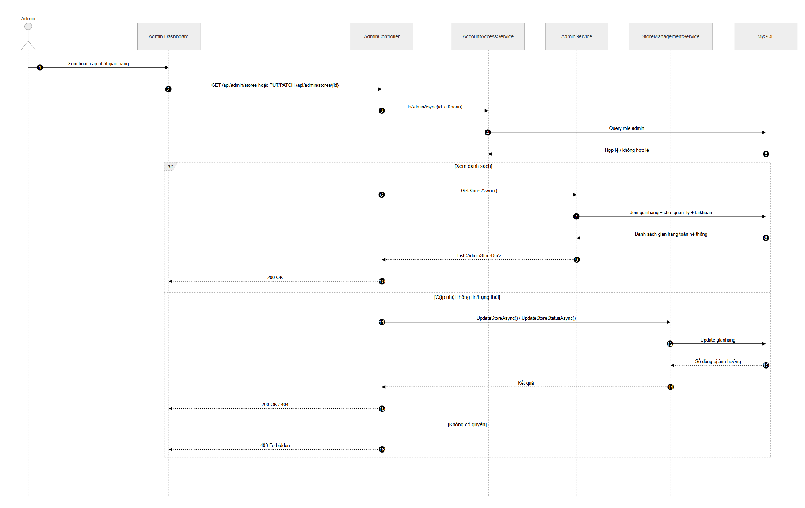
| Quy tắc | Mô tả |
|---|---|
| Yêu cầu có mạng | Thanh toán online chỉ được khởi tạo khi thiết bị có Internet; nếu offline thì app trả lỗi FAILED với mã như NO_NETWORK. |
| Khởi tạo giao dịch | Sau khi người dùng chọn gói, backend phải tạo paymentRequest và hóa đơn ở trạng thái PENDING; nếu không tạo được thì trả PAYMENT_INIT_FAILED. |
| Trạng thái chờ xác nhận | Khi giao dịch chưa có kết quả cuối cùng, hệ thống trả PENDING hoặc VERIFYING kèm paymentRequestId, invoiceId và lý do để app tiếp tục hiển thị trạng thái chờ. |
| Xác thực callback | Webhook/callback phải hợp lệ và đúng chữ ký; nếu callback lỗi, thiếu tin cậy hoặc chưa đối soát xong thì giao dịch không được cấp quyền ngay mà chuyển sang VERIFYING. |
| Kết quả thất bại | Nếu thanh toán thất bại hoặc bị người dùng hủy, backend cập nhật hóa đơn sang FAILED hoặc CANCELLED và trả lý do cho app. |
| Kết quả thành công | Chỉ khi thanh toán thành công và dữ liệu đối soát khớp, backend mới tạo quyền truy cập, khóa vào thiết bị hiện tại, sinh QR token đăng nhập và trả SUCCESS. |
| Dữ liệu trả về cho app | Kết quả thành công cần có tối thiểu invoiceId, packageId, accessToken hoặc thông tin quyền truy cập tương đương, thời hạn sử dụng và qrPayload; app lưu lại dữ liệu này để mở nội dung chính. |
| Email là tùy chọn | Nếu người dùng chọn nhận qua email, hệ thống gửi thêm QR token/thông tin truy cập và trả kèm trạng thái gửi mail; việc gửi mail không thay thế dữ liệu trả trực tiếp cho app. |
3.9 Xem Tour (App)
Chức năng cho phép du khách xem danh sách các tour du lịch có sẵn trong hệ thống, bao gồm thông tin chi tiết về lộ trình, các điểm tham quan, thời gian và giá tour. Du khách có thể chọn tour phù hợp và xem trước lộ trình trên bản đồ.
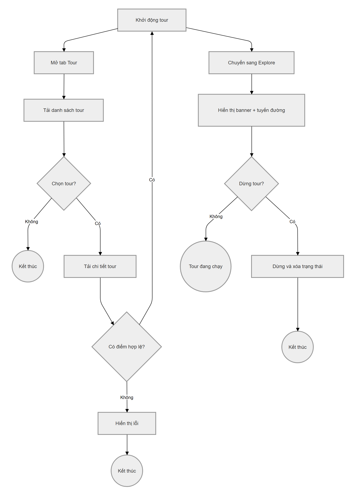
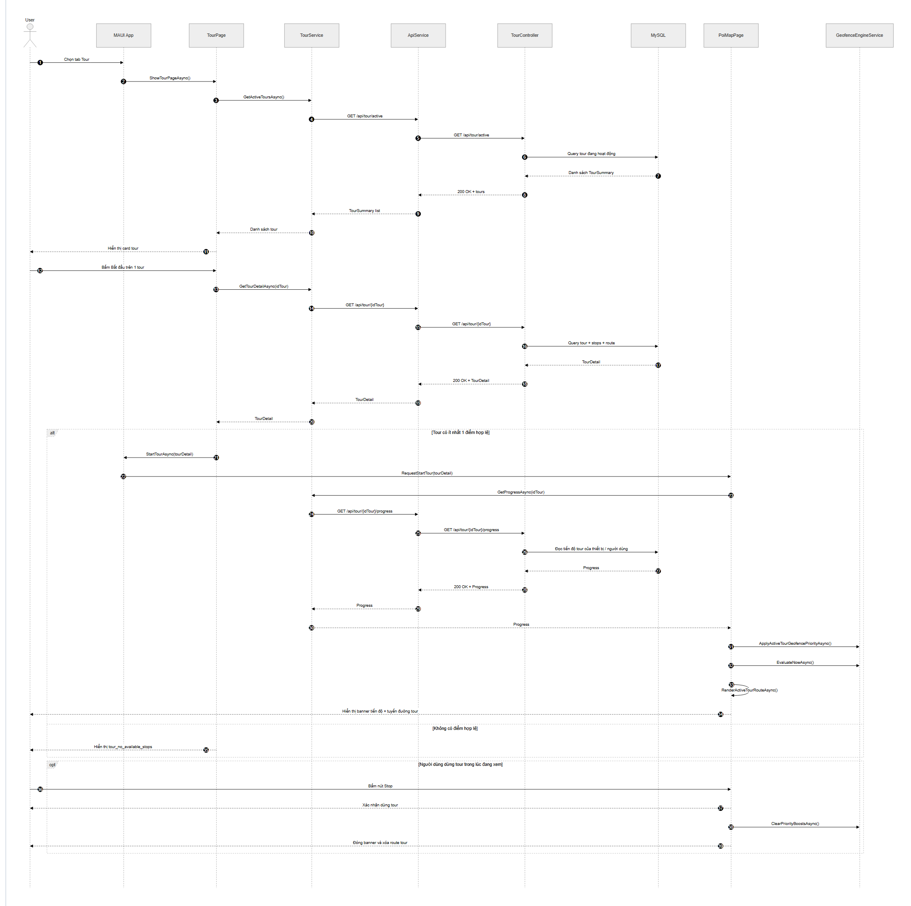
| Quy tắc | Mô tả |
|---|---|
| Danh sách tour | Hiển thị tất cả tour đang hoạt động với thông tin tóm tắt: tên tour, số điểm tham quan, thời gian dự kiến và giá. |
| Chi tiết tour | Khi chọn tour, hiển thị lộ trình đầy đủ gồm danh sách các gian hàng/điểm tham quan theo thứ tự, mô tả và hình ảnh minh họa. |
| Bản đồ lộ trình | Lộ trình tour được hiển thị trên bản đồ với các marker cho từng điểm dừng và đường đi gợi ý giữa các điểm. |
| Trạng thái truy cập | Chỉ du khách đã có quyền truy cập (token hợp lệ) mới xem được chi tiết tour; nếu chưa có quyền thì hiển thị thông tin cơ bản và gợi ý đăng ký gói. |
| Ngôn ngữ | Nội dung tour hiển thị theo ngôn ngữ đã chọn của người dùng, bao gồm tên tour, mô tả và thông tin các điểm tham quan. |
| Cache offline | Dữ liệu tour được lưu cache để du khách có thể xem lại khi mất kết nối mạng; cache tuân theo cùng cơ chế TTL 12 giờ như các dữ liệu khác. |
3.10 Cơ chế Queue và Concurrency (Xử lý Audio)
Để đảm bảo trải nghiệm người dùng không bị gián đoạn khi có nhiều sự kiện kích hoạt cùng lúc (overlapping geofences) hoặc khi hệ thống chịu tải cao (nhiều người cùng nghe tại một POI), hệ thống áp dụng cơ chế hàng đợi và xử lý song song như sau:
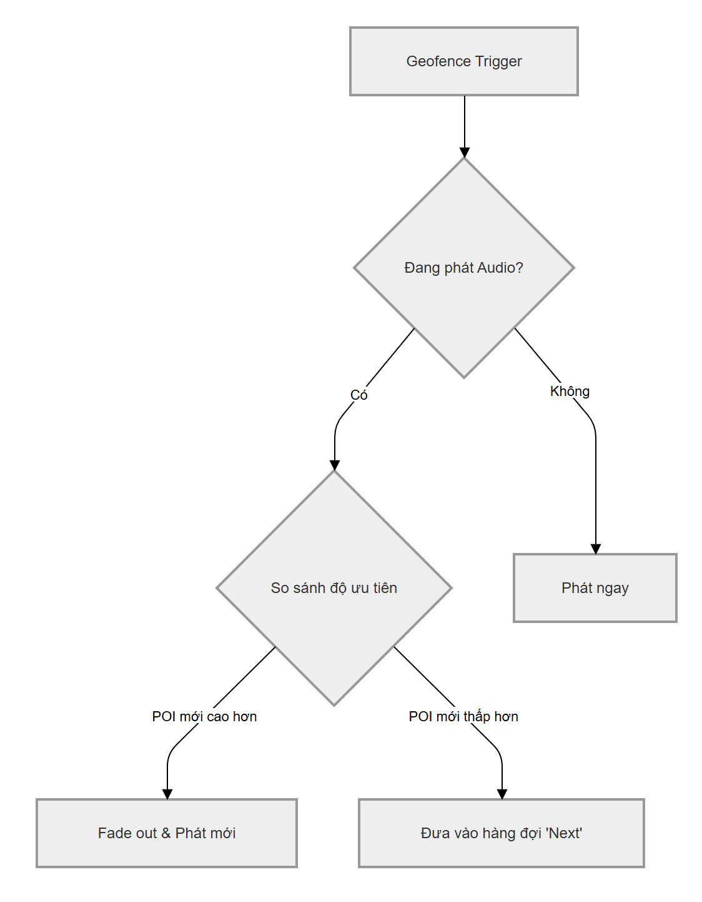
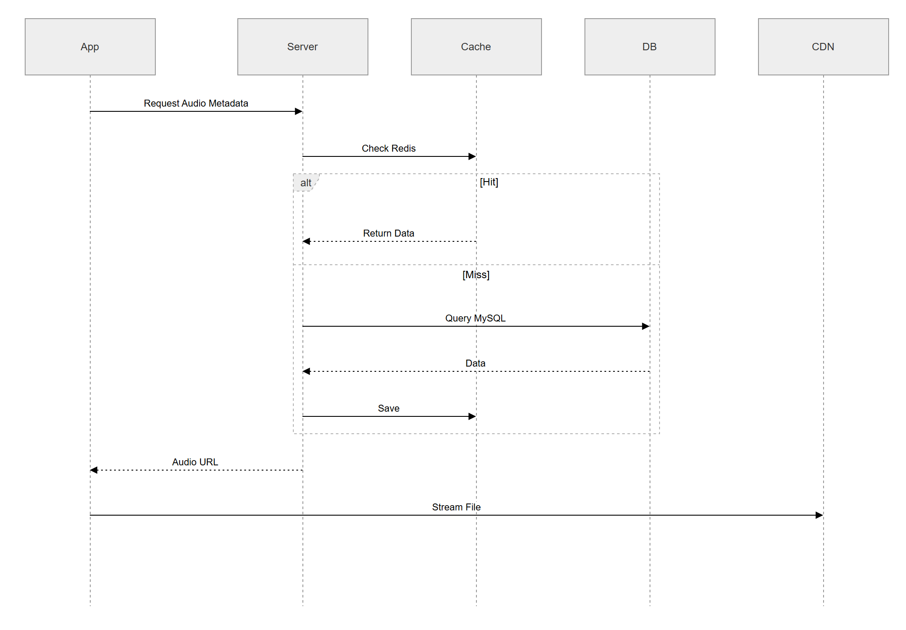
| Quy tắc | Mô tả |
|---|---|
| Hàng đợi Trigger (App) | Khi đi vào nhiều vùng geofence chồng lấn, App đưa các trigger vào hàng đợi ưu tiên dựa trên khoảng cách (gần hơn ưu tiên trước) hoặc mức độ quan trọng của POI. |
| Ưu tiên phát | Nếu đang phát audio mà có trigger mới quan trọng hơn, hệ thống thực hiện fade-out audio cũ và phát ngay audio mới. Audio cũ được đưa vào danh sách chờ. |
| Cooldown Concurrency | Mỗi POI có thời gian cooldown (ví dụ: 5 phút) để tránh việc một thiết bị gửi request liên tục gây tải giả cho server khi người dùng đứng tại ranh giới vùng. |
| Server-side Caching | Metadata của audio (tên, mô tả, link) được lưu tại Redis/MemoryCache để phục vụ hàng ngàn request cùng lúc mà không gây nghẽn Database. |
| CDN Delivery | File audio vật lý được lưu trữ tại Cloud Storage/CDN. App tải stream trực tiếp từ CDN, giảm tải băng thông và xử lý I/O cho API Server. |
| Rate Limiting | Áp dụng giới hạn số lượng request trên mỗi Device ID để ngăn chặn tấn công DoS hoặc lỗi lặp vô hạn từ phía Client. |
3.11 Đăng nhập (Admin/Owner Web)
Hệ thống cung cấp giao diện đăng nhập tập trung cho Admin (quản trị hệ thống) và Owner (chủ gian hàng) để truy cập vào các công cụ quản lý tương ứng trên nền tảng web (CS_admin).
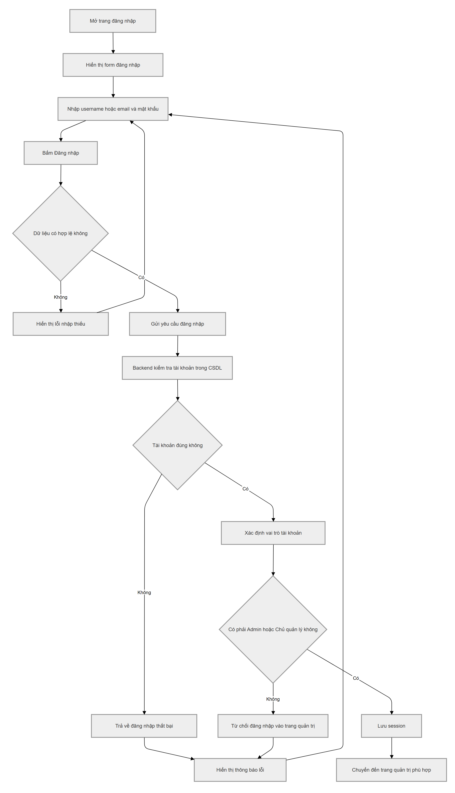
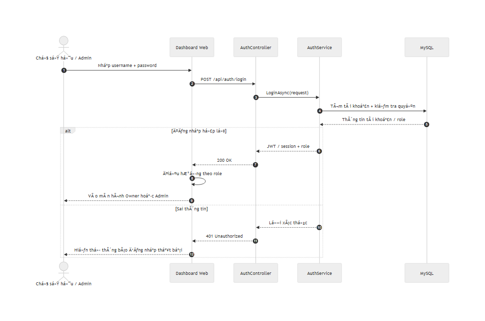
| Quy tắc | Mô tả |
|---|---|
| Xác thực | Sử dụng email/tên đăng nhập và mật khẩu để xác thực tài khoản qua API backend. |
| Phân quyền | Sau khi đăng nhập thành công, hệ thống kiểm tra Role để điều hướng (Admin vào trang tổng, Owner vào trang quản lý gian hàng riêng). |
| Bảo mật | Mật khẩu được mã hóa, sử dụng Session/JWT để duy trì trạng thái đăng nhập an toàn. |
| Quên mật khẩu | Hỗ trợ luồng khôi phục mật khẩu qua email đăng ký nếu người dùng không nhớ thông tin. |
3.12 Đăng ký tài khoản (Owner Web)
Hệ thống cung cấp quy trình đăng ký cho chủ gian hàng mới để tham gia vào hệ thống Vĩnh Khánh Smart Tourism.
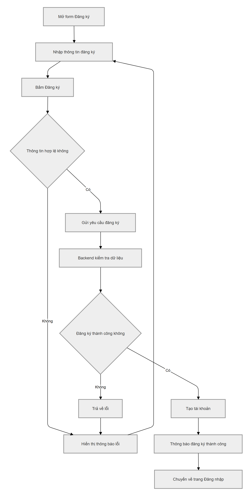
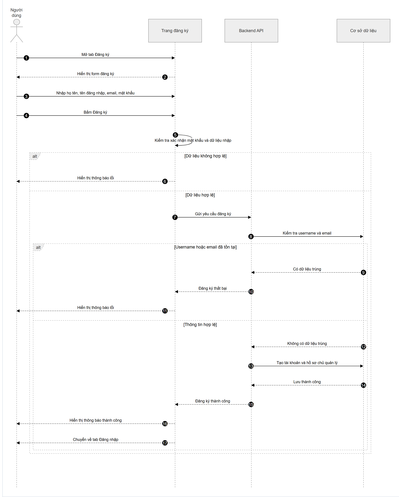
| Quy tắc | Mô tả |
|---|---|
| Duy nhất | Email và Tên đăng nhập phải là duy nhất, không trùng lặp trong hệ thống. |
| Xác thực OTP | Yêu cầu xác thực qua Email hoặc Số điện thoại để hoàn tất quá trình đăng ký. |
| Phê duyệt | Tài khoản Owner mới đăng ký cần được Admin phê duyệt trước khi có thể bắt đầu kinh doanh. |
| Bảo mật mật khẩu | Mật khẩu phải đáp ứng độ phức tạp tối thiểu (8 ký tự, có chữ hoa, chữ thường và số). |
3.13 Xem chi tiết gian hàng (Admin/Owner Web)
Chức năng cho phép quản trị viên hoặc chủ gian hàng xem thông tin đầy đủ, thống kê và quản lý các thành phần bên trong một gian hàng cụ thể.
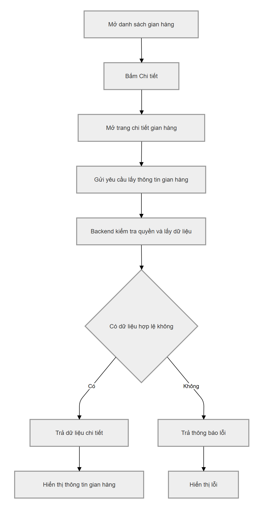
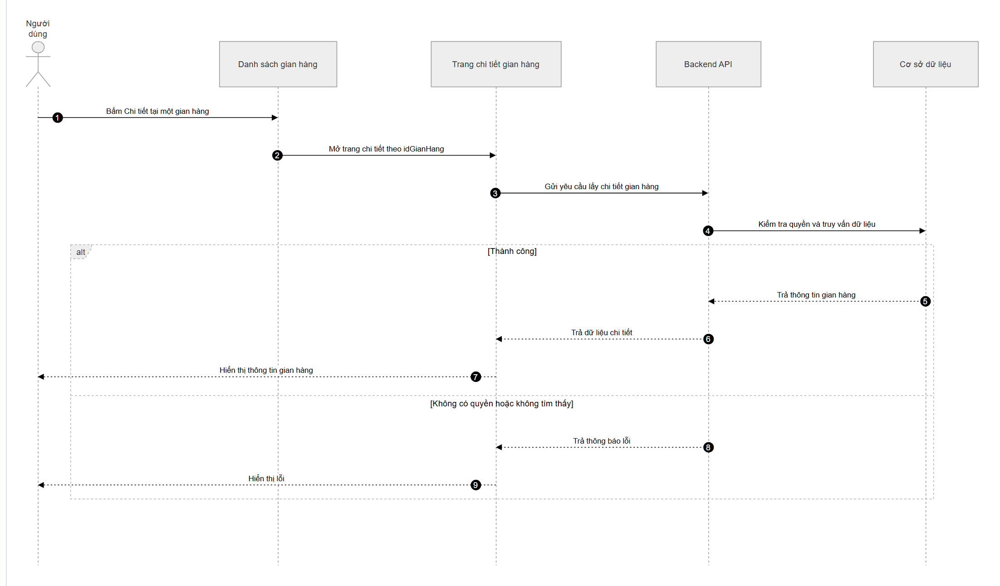
| Quy tắc | Mô tả |
|---|---|
| Phân quyền truy cập | Admin xem được tất cả gian hàng; Owner chỉ xem được gian hàng thuộc sở hữu của mình. |
| Dữ liệu thời gian thực | Hiển thị trạng thái hoạt động hiện tại (Đang mở, Đã đóng) dựa trên cấu hình giờ mở cửa. |
| Thống kê cơ bản | Hiển thị số lượng món ăn, lượt check-in và đánh giá trung bình ngay tại trang chi tiết. |
| Tích hợp bản đồ | Hiển thị vị trí tọa độ của gian hàng trên mini-map trong trang chi tiết để xác định vị trí. |
3.14 Sửa thông tin gian hàng (Admin/Owner Web)
Chức năng cho phép người dùng có quyền quản lý cập nhật các thông tin mô tả, hình ảnh, thông tin liên hệ và các thiết lập hoạt động của gian hàng.
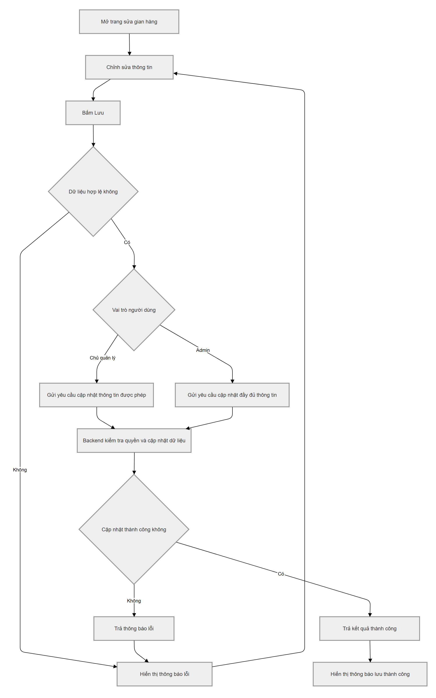
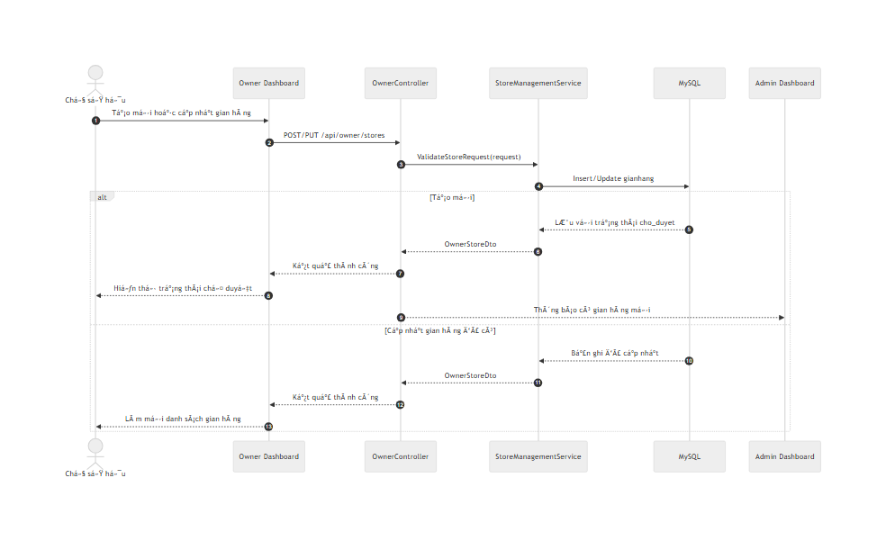
| Quy tắc | Mô tả |
|---|---|
| Xác thực quyền | Chỉ chủ sở hữu của gian hàng hoặc Admin cấp cao mới có quyền chỉnh sửa. |
| Dữ liệu đa ngôn ngữ | Mọi thay đổi về Tên, Mô tả phải được cập nhật cho cả 3 ngôn ngữ (Việt, Anh, Trung) nếu có. |
| Định dạng hình ảnh | Hình ảnh tải lên phải đúng định dạng (jpg, png, webp) và dung lượng không quá 5MB. |
| Lịch sử thay đổi | Hệ thống ghi lại nhật ký (Log) ai đã sửa thông tin gì và vào thời gian nào. |
3.15 Thêm món ăn (Owner Web)
Cho phép chủ quản lý thêm các món ăn/dịch vụ mới vào thực đơn của gian hàng, bao gồm hình ảnh minh họa, giá cả và thông tin chi tiết để hiển thị trên ứng dụng di động.
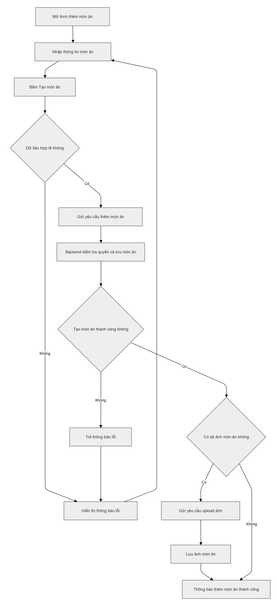
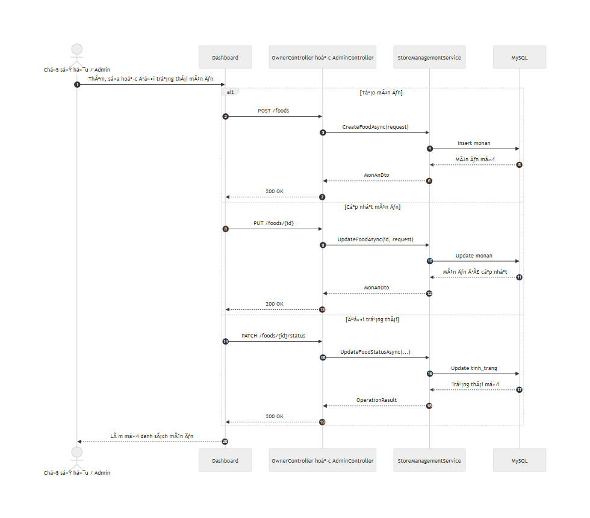
| Quy tắc | Mô tả |
|---|---|
| Thông tin bắt buộc | Tên món, Giá, và ít nhất 1 hình ảnh đại diện là bắt buộc. |
| Giá món ăn | Giá phải là số dương, hỗ trợ hiển thị theo VNĐ hoặc tiền tệ cấu hình. |
| Phân loại | Món ăn phải được gán vào ít nhất một Danh mục (Category) của gian hàng. |
| Đa ngôn ngữ | Hỗ trợ nhập Tên và Mô tả theo các ngôn ngữ hệ thống yêu cầu (Việt, Anh, Trung...). |
3.16 Xem POIMap (Admin/Owner Web)
Cung cấp giao diện bản đồ trực quan hiển thị tất cả các điểm quan tâm (Point of Interest - POI) như gian hàng, khu di tích, tiện ích công cộng... giúp quản trị viên theo dõi mật độ và vị trí các điểm trên toàn khu vực Vĩnh Khánh.
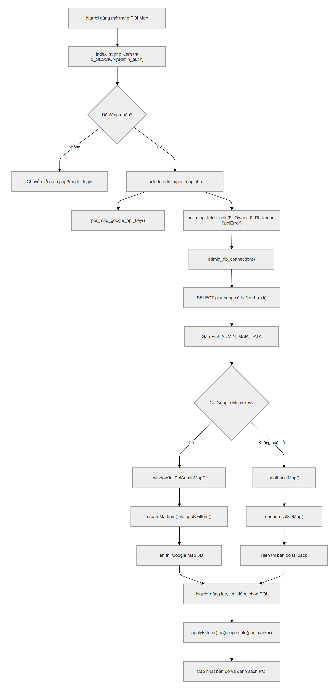
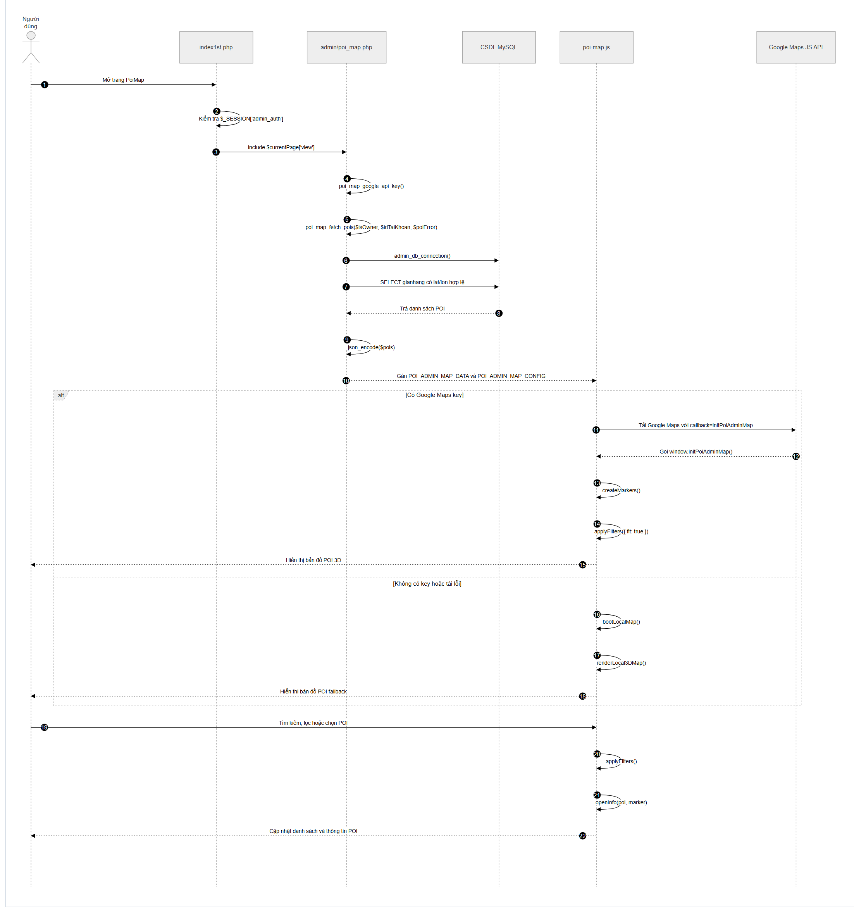
| Quy tắc | Mô tả |
|---|---|
| Nguồn dữ liệu | Hiển thị tọa độ từ bảng gianhang (với các shop) và bảng POI tùy chỉnh (nếu có). |
| Phân loại Marker | Sử dụng màu sắc hoặc icon khác nhau để phân biệt: Đang hoạt động, Tạm đóng, Di tích, Nhà vệ sinh... |
| Tính tương tác | Click vào Marker hiển thị InfoWindow chứa: Tên, Địa chỉ, Số điện thoại và nút xem chi tiết. |
| Bộ lọc | Hệ thống cho phép lọc hiển thị theo Loại điểm hoặc Trạng thái kinh doanh. |
3.17 Quản lý thiết bị thời gian thực (Admin Web)
Module này cho phép quản trị viên giám sát trạng thái hoạt động của các thiết bị IoT (Beacon, thiết bị phát Wifi, Cảm biến...) được lắp đặt trong khu du lịch. Dữ liệu được cập nhật liên tục qua kết nối thời gian thực để đảm bảo tính sẵn sàng của hệ thống thuyết minh tự động.
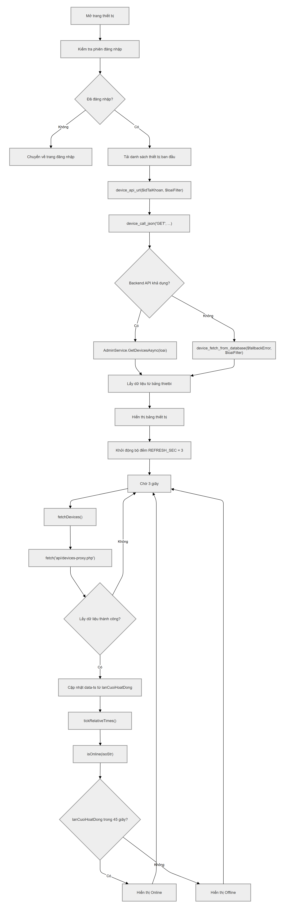
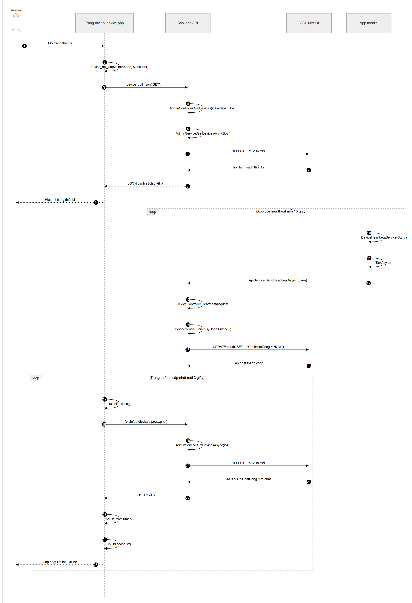
| Quy tắc | Mô tả |
|---|---|
| Thời gian cập nhật | Dữ liệu trạng thái phải được cập nhật ít nhất 30 giây/lần. |
| Cảnh báo Pin | Hệ thống tự động đánh dấu đỏ các thiết bị có mức pin dưới 20%. |
| Lịch sử hoạt động | Lưu trữ log thay đổi trạng thái (Online/Offline) trong vòng 30 ngày gần nhất. |
| Quản lý nhóm | Cho phép phân nhóm thiết bị theo Khu vực (Ví dụ: Nhóm Beacon phố đi bộ, Nhóm Cảm biến bãi xe). |
3.18 Xem hóa đơn (Admin/Owner Web)
Quản lý và tra cứu lịch sử giao dịch. Chủ gian hàng có thể theo dõi doanh thu hàng ngày, trong khi quản trị viên hệ thống có cái nhìn tổng thể về hoạt động kinh doanh của toàn khu vực.
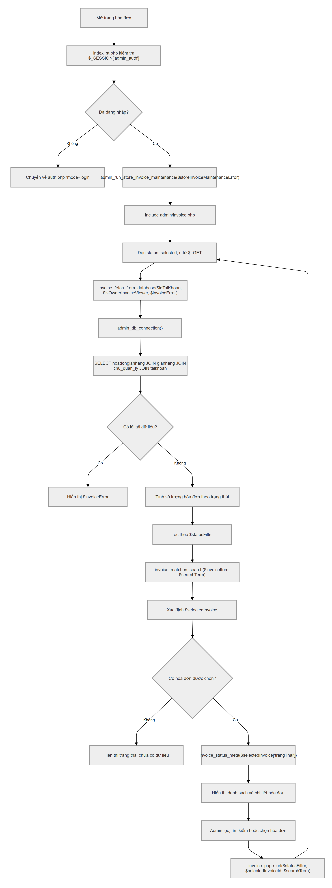
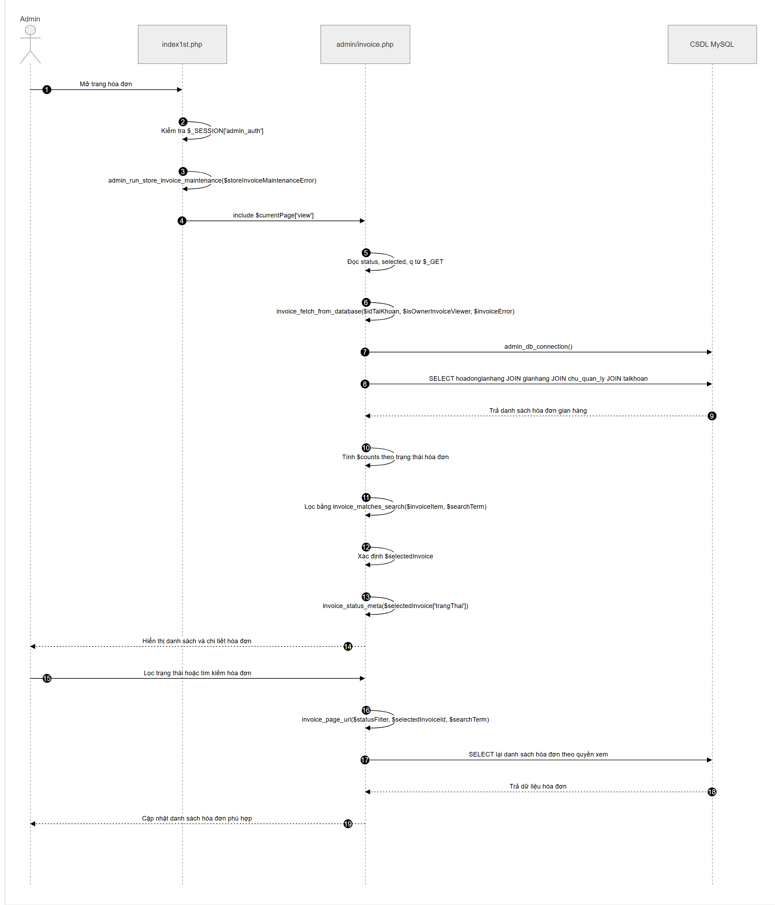
| Quy tắc | Mô tả |
|---|---|
| Phân quyền dữ liệu | Chủ gian hàng chỉ được xem hóa đơn thuộc về idGianHang của mình. Admin xem toàn bộ. |
| Thông tin chi tiết | Phải hiển thị đầy đủ: Mã hóa đơn, Ngày giờ, Danh sách món ăn, Đơn giá lúc bán, Thuế/Phí, và Tổng thanh toán. |
| Trạng thái thanh toán | Phân biệt rõ: Thành công (đã nhận tiền), Đang xử lý, hoặc Đã hoàn tiền (Refunded). |
| Bảo mật | Ẩn bớt thông tin nhạy cảm của khách hàng (ví dụ: chỉ hiển thị 4 số cuối thẻ nếu thanh toán online). |
3.19 Quản lý yêu cầu (Admin)
Hệ thống trung tâm để Admin xử lý các yêu cầu từ chủ gian hàng (Đăng ký gian hàng mới, thay đổi menu, báo cáo sự cố hạ tầng...). Đảm bảo mọi thay đổi quan trọng trên hệ thống đều được kiểm duyệt.
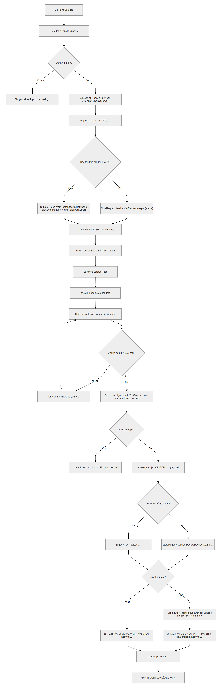
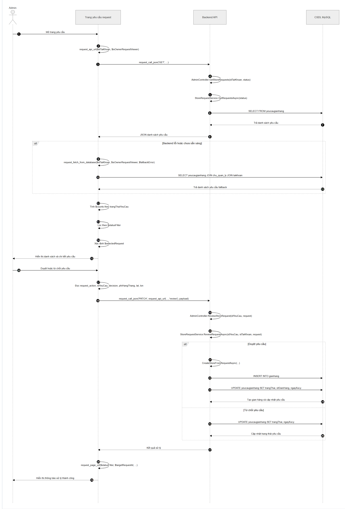
| Quy tắc | Mô tả |
|---|---|
| Tính nguyên tử | Khi Admin phê duyệt thay đổi thông tin gian hàng, dữ liệu trong bảng gianhang phải được cập nhật đồng thời với trạng thái yêu cầu. |
| Bắt buộc lý do | Trường hợp "Từ chối", Admin bắt buộc phải nhập lý do để chủ gian hàng biết và sửa đổi. |
| Thông báo Realtime | Sử dụng hệ thống thông báo (Notification) để báo cho Admin khi có yêu cầu mới và báo cho Owner khi yêu cầu được xử lý. |
| Ghi log kiểm duyệt | Lưu trữ thông tin: Ai là người duyệt, Duyệt lúc nào, Nội dung trước và sau khi thay đổi. |
3.20 Quản lý gói dịch vụ (Admin)
Công cụ định nghĩa các mức phí và quyền lợi cho gian hàng. Mỗi gói dịch vụ sẽ quyết định các tính năng mà gian hàng được phép sử dụng (Ví dụ: Số lượng món ăn tối đa, quyền xuất hiện trên bản đồ ưu tiên).
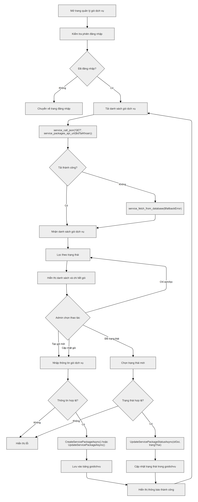
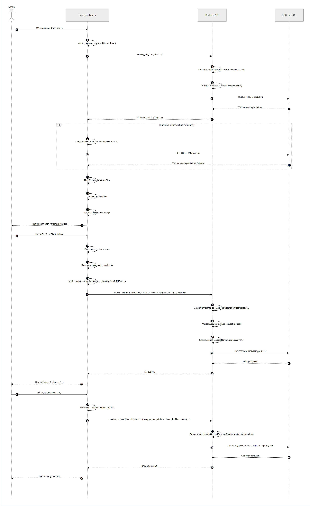
| Quy tắc | Mô tả |
|---|---|
| Kế thừa quyền lợi | Việc thay đổi quyền lợi của gói (ví dụ: tăng số món ăn) sẽ áp dụng ngay cho tất cả gian hàng đang sử dụng gói đó. |
| Chính sách giá | Giá gói phải được lưu vết lịch sử (không ghi đè trực tiếp nếu có gian hàng đang nợ hóa đơn dựa trên giá cũ). |
| Thời hạn gói | Mặc định tính theo tháng (30 ngày). Hỗ trợ các gói dài hạn (6 tháng, 12 tháng) với mức chiết khấu tùy chỉnh. |
| Gói mặc định | Phải luôn có ít nhất một "Gói Cơ bản" (có thể miễn phí) để các gian hàng mới đăng ký sử dụng ngay. |
3.21 Heatmap (Bản đồ nhiệt)
Tính năng cung cấp cái nhìn trực quan về mật độ khách du lịch tại các điểm POI và gian hàng theo thời gian thực. Giúp Admin điều tiết giao thông du lịch và đánh giá hiệu quả của các địa điểm.
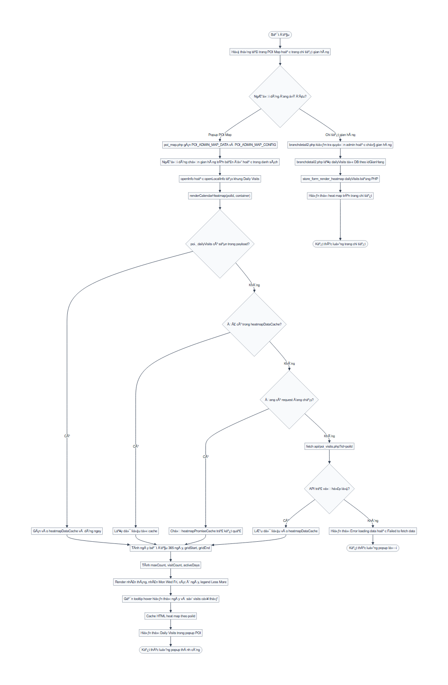
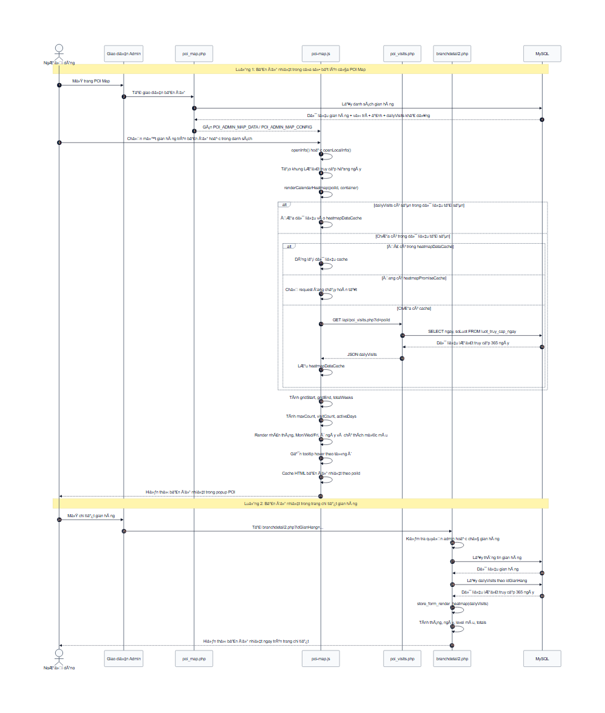
| Quy tắc | Mô tả |
|---|---|
| Độ trễ dữ liệu | Dữ liệu GPS từ thiết bị được tổng hợp tối đa mỗi 5 phút/lần để giảm tải Server. |
| Bán kính ảnh hưởng | Điểm nóng được tính trong bán kính 20m xung quanh tọa độ thiết bị. |
| Lọc thời gian | Cho phép xem heatmap theo các mốc: 1h qua, 24h qua, hoặc theo khoảng ngày tùy chọn. |
| Bảo mật danh tính | Dữ liệu Heatmap chỉ chứa tọa độ và số lượng, không kèm theo id thiết bị hay thông tin cá nhân. |
3.22 Quản lý Tour (Admin Web)
Module cho phép quản trị viên tạo, chỉnh sửa, xuất bản và xóa các tour du lịch trong hệ thống. Mỗi tour bao gồm thông tin mô tả, giá, thời lượng và một lộ trình gồm nhiều điểm tham quan (POI/gian hàng) được sắp xếp theo thứ tự. Admin có thể quản lý trạng thái xuất bản của tour để kiểm soát nội dung hiển thị trên ứng dụng di động.
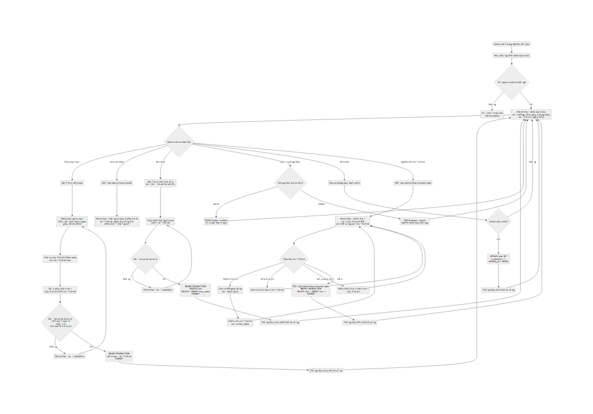
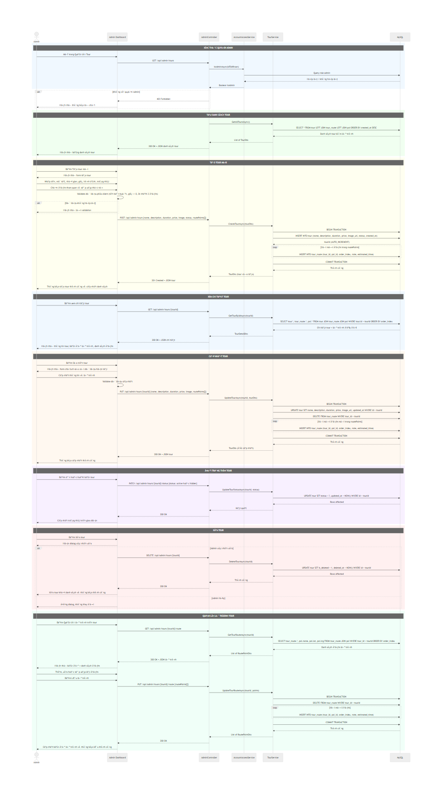
| Quy tắc | Mô tả |
|---|---|
| Quyền truy cập | Chỉ Admin mới có quyền tạo, sửa, xóa và thay đổi trạng thái tour. Hệ thống kiểm tra IsAdminAsync trước mọi thao tác. |
| Lộ trình tối thiểu | Một tour hợp lệ phải có ít nhất 2 điểm tham quan trong lộ trình; nếu không thì từ chối lưu. |
| Thứ tự điểm | Các điểm trong lộ trình được sắp xếp theo order_index; Admin có thể kéo thả đổi thứ tự trước khi lưu. |
| Trạng thái tour | Tour có 2 trạng thái: active (hiển thị trên app) và hidden (ẩn khỏi app). Mặc định tạo mới là hidden. |
| Xóa mềm | Tour không bị xóa vĩnh viễn mà được đánh dấu is_deleted = 1 và ghi nhận thời gian xóa; yêu cầu Admin xác nhận trước khi thực hiện. |
| Transaction | Việc tạo/cập nhật tour và lộ trình được thực hiện trong một transaction để đảm bảo tính toàn vẹn dữ liệu. |
| Giá tour | Giá tour phải là số không âm; giá = 0 được hiểu là tour miễn phí. |
| Cập nhật lộ trình | Khi cập nhật lộ trình, hệ thống xóa toàn bộ điểm cũ và tạo lại theo danh sách mới (replace strategy) để tránh xữ lý diff phức tạp. |
| Bản đồ lộ trình | Giao diện quản lý lộ trình hiển thị bản đồ với các marker POI và đường nối giữa các điểm, giúp Admin hình dung lộ trình trực quan. |
5. Dữ liệu

| Nhóm | Bảng |
|---|---|
| Tài khoản | taikhoan, admin, chu_quan_ly, khachhang |
| Gian hàng | gianhang, gianhangngonngu, hinhanhgianhang, yeucaugianhang |
| Món ăn | monan, monanngonngu, hinhanhmonan |
| Access/gói | goidichvu, thietbi, phien_vao_app, hoadon |
| Hóa đơn | chitiethoadon, hoadongianhang |
Class Diagram.drawio.png có sẵn trong thư mục.
6. Bộ sơ đồ thiết kế trong thư mục
📁 C-SA-T (Workspace Root)
- 📄 MainPage.xaml
- 📄 AppShell.xaml
- 📄 App.xaml
- 📁 Services (API Calls)
- 📁 Models (Data Objects)
- 📁 GPS (Location Logic)
- 📄 MauiProgram.cs
- 📄 MauiApp1.csproj
- 📄 C-SA-T.sln
- 📄 dashboard.php
- 📄 request.php
- 📄 service.php
- 📄 device.php
- 📄 invoice.php
- 📄 poi_map.php
- 📄 store.php
- 📄 menu.php
- 📄 account.php
- 📄 branchdetail2.php
- 📄 admin_api.php
- 📄 store_api.php
- 📄 auth.php
- 📄 connect.php
- 📄 index1st.php
- 📄 main.js
- 📄 style.css
- 🖼️ Class Diagram.drawio.png
- 🖼️ usecase.drawio.png
- 🖼️ sequence_qr_access.png
- 🖼️ GianHang-Page-3.jpg
- 📄 prd.html
- 📄 gianhang (2).sql
📁 C-SA-T (Mobile App - .NET MAUI)
📁 Views (Giao diện)
📁 Services & Models
📁 CS_admin (Web Admin)
📁 admin
📁 api
📁 VinhKhanh (App Frontend)
📁 prd-assets
📁 mermaid
7. API chính
| Nhóm | Endpoint | Mục đích |
|---|---|---|
| Access | GET /api/access/validate | Kiểm tra token, hạn dùng, đúng thiết bị. |
| Access | POST /api/access/token/activate | Quét/kích hoạt QR token đăng nhập. |
| Access | POST /api/access/package/register | Đăng ký gói, tạo token, hóa đơn, email QR. |
| Auth | POST /api/auth/login, POST /api/auth/register | Đăng nhập và đăng ký tài khoản. |
| App data | GET /api/gianhang/appdata | Dữ liệu gian hàng/món ăn cho app theo ngôn ngữ. |
| Gian hàng | GET /api/gianhang, GET /api/gianhang/{id} | Danh sách và chi tiết gian hàng. |
| Audio | POST /api/gianhang/{id}/generate-audio | Tạo audio TTS từ mô tả. |
| Thiết bị | GET /api/devices-proxy.php | Lấy trạng thái và quản lý thiết bị đầu cuối. |
| Thanh toán | POST /api/payment_webhook.php | Tiếp nhận phản hồi từ cổng thanh toán (Momo/ZaloPay...). |
| Thống kê | GET /api/poi_visits.php | Theo dõi lượt truy cập và tương tác tại các POI. |
| Admin | /api/admin/request.php | Phê duyệt/Từ chối yêu cầu từ gian hàng. |
| Admin | /api/admin/service.php | Thiết lập và quản lý các gói dịch vụ. |
| Owner | /api/owner/menu.php | Quản lý thực đơn và món ăn. |
| Owner | /api/owner/invoice.php | Theo dõi hóa đơn và báo cáo doanh thu gian hàng. |
8. Phi chức năng và tiêu chí chấp nhận
| Hạng mục | Yêu cầu | Acceptance |
|---|---|---|
| Access | Token đúng máy, còn hạn. | Token sai máy bị từ chối. |
| Offline | SQLite cache TTL 12 giờ và fallback cache cũ. | Tắt API vẫn xem được data đã sync. |
| Audio | Có cache audio và không crash khi mất mạng. | Audio phát được nếu cache hoặc network sẵn sàng. |
| Role | Owner/Admin endpoint kiểm tra quyền. | Owner không sửa được gian hàng không thuộc mình. |
| Secret | Không đưa SMTP/Google key vào PRD/commit. | Dùng example/env/local secret. |
| Hiệu năng | Phân trang (Pagination) cho danh sách hóa đơn và yêu cầu. | Tải trang danh sách < 2s với 10,000 bản ghi. |
| Bảo mật Admin | Ghi Log (Audit Trail) cho mọi thao tác duyệt/từ chối. | Truy vết được người duyệt và lý do thay đổi. |
| Tính đúng đắn | Tự động ngắt Access khi gói dịch vụ hết hạn. | Thiết bị bị báo "Hết hạn" ngay khi qua ngày kết thúc gói. |
| Thông báo | Gửi Email/Push ngay khi Admin xử lý yêu cầu. | Người dùng nhận được thông báo trong vòng 30 giây. |
9. Roadmap
| Giai đoạn | Nội dung | |
|---|---|---|
| v2.0 | Chốt MVP, access token one-device, PRD/diagram, ổn định dashboard. | |
| v2.1 | Tích hợp payment production, webhook, đối soát hóa đơn. | |
| v2.2 | JWT/session, role claims, rate limit QR/token. | |
| v2.3 | Analytics: lượt xem, lượt nghe audio, gói bán chạy. | |
| v2.4 | UX polish, tên app, icon, onboarding, offline indicator. | |
| v2.5 | Nâng cấp logic trùng nhau và queue. | |
| v2.6 | Theo dõi thiết bị offline, tối ưu app mượt hơn, update payment cho app. | |
| v2.7 | Update payment cho web, heatmap monitoring theo dõi từng poi. |